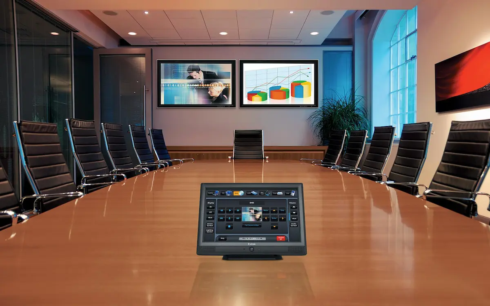

Blog / Audio visual
Audio Visual Systems That Actually Work (And Why Most Don’t)
Published April 2026 · OTR Cable Construction · Veteran-owned business

Conference room technology should shorten meetings, not start them with five minutes of cable yoga. When AV “never works,” the root cause is usually design—not a missing HDMI adapter.
The usual failure modes
- BYOD wireless that fights guest VLANs and multicast
- Microphones and speakers sized for the wrong room gain
- Displays and switchers without a single “happy path” for presenters
- Control code that is clever on day one and fragile on day ninety
What good AV includes
Strong deployments share a pattern: predictable audio coverage, display systems matched to lighting and viewing distance, one-touch or minimal-step controls, and a network path that supports real-time traffic. Our audio visual systems team coordinates with structured cabling and switching so uplinks match the bandwidth you advertise to users.
Features businesses ask for
- Wireless presentation with sensible authentication
- VC platforms integrated with room audio and camera framing
- Touch controllers with identical UX across rooms
- Digital signage fed from approved content workflows
Simplicity is a requirement
If a room needs a laminated cheat sheet, the system failed the user test. Standardize room types, color-code sparingly, and train facilities on the same reset procedure everywhere.
Final thoughts
Great AV is invisible: meetings start on time, audio is intelligible, and IT gets clean logs when something does need attention. Review our services to pair AV with security and collaboration roadmaps.
Need conference rooms that just work?
We design and install AV systems with consistent UX across your estate.
Plan a room with us